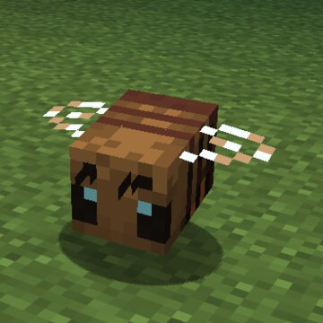

The bees
A colony
A colony lives in its hive and flies out to work flowers up to twelve blocks away, bringing nectar home.
What the honey becomes depends on what they work: plant for it.
Rain and winter keep them in. A hive with nothing in flower nearby makes little.
Wild bees
Wild colonies nest in birch and oak, most of all in flower forests, and in savanna acacias.
The kind is the country's, and a nest's colour tells you whose it is.
An empty skep takes a nest's bees home with you.
Western honey bees

The everyday bee of meadows and woods. Steady in every season, middling in temper.
Wild in plains, forests and most temperate country. Plain golden nests.
Dark European bees

The old dark bee of the north. Works through grey, cool weather and even a little in winter, but never makes much.
Wild in the taiga and snowy country, in dark brown nests. Short-tempered: always smoke them.
Italian bees

Golden, gentle and the great honey-maker, but a hungry colony that eats its capped frames in winter.
Wild in the savanna, nesting in acacias. Amber nests.
Carniolan bees

Grey and gentle bees of the mountains. The quickest of all to build up in spring.
Wild in meadows, cherry groves and the hills. Grey-green nests.
Buckfast bees

A cross of Italian and Carniolan: gentle, hard-working, and easy to keep.
Never found wild: see Breeding Buckfasts.
Ancient bees

Woken out of amber, a bee lost for ages. Works steadily from early spring until the cold, and a little even in winter.
Never found wild: only in amber, deep under old forests. Middling temper.
Bees out of amber
Seams of amber run in the rock under old forests. Once in a while a lump holds a bee, caught long ago. Hold it with an empty skep and it wakes: an ancient bee.
Mine amber without silk touch, or you'll only get the seam.
The bees at a glance
How hard each works through the year, and its temper.
| Bee | Spr | Sum | Aut | Win | Temper |
|---|---|---|---|---|---|
| Western | ●●○ | ●●○ | ●○○ | ○○○ | ●●○ |
| Dark | ●●○ | ●●○ | ●●○ | ●○○ | ●●● |
| Italian | ●●○ | ●●● | ●○○ | ○○○ | ●○○ |
| Carniolan | ●●● | ●●○ | ●○○ | ○○○ | ●○○ |
| Buckfast | ●●● | ●●● | ●●○ | ○○○ | ●○○ |
| Ancient | ●●○ | ●●○ | ●●○ | ●○○ | ●●○ |
Click a bee to turn to its page.